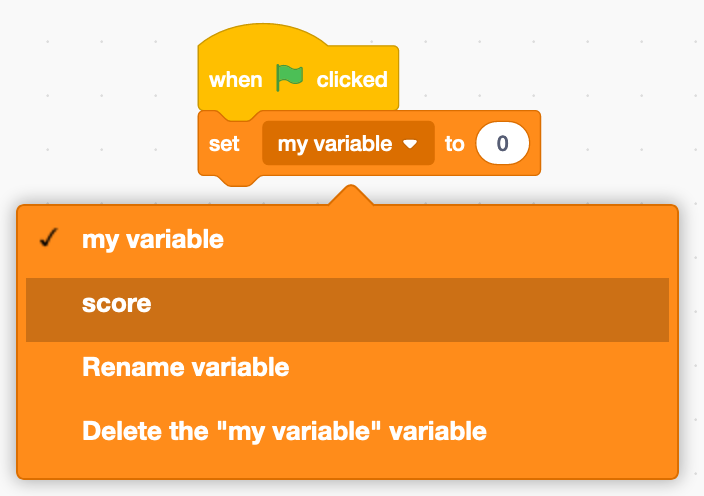

1. Introduction
This tutorial will guide you through the creation of a PacMan-like game.
Click on "Getting started" to start!
You can find a version of this game online on the Scratch website
This tutorial will guide you through the creation of a PacMan-like game.
Click on "Getting started" to start!
You can find a version of this game online on the Scratch website
Open the Scratch website (right click to open in a new window):
Click on "Create" to start coding.
Highly recommended
If you log into Scratch you can save your project and keep working on it when you get home!
Create an account by clicking on "Join Scratch" or "Login" if you have already registered.
Make a colourful backdrop. Use the paint can tool to flood the backdrop with colour.
Click on "Stage" on the right
then "Backdrops" at the top left of the screen
Click on the Paint Tool, select a color you like and click on the checkered area to paint it.
Feel free to experiment with the other tools, but don't make it too crowded just yet! You can come back later and improve the background, or select a completely new one.
Let's draw our pacman!
First of all delete the "Cat" sprite by clicking on the bin icon with an "X"
Now create a new sprite by hovering the mouse on the little cat head with a "+" sign and clicking on the paintbrush symbol
Select yellow from the color picker, the "circle" tool and draw a circle roughtly in the middle of the checkered board
Let's draw the eye and the mouth! To make it easier to work, click on the magnifying glass at the bottom right of the drawing area
Click on an empty spot of the drawing area to deselect pacman.
Now select "black" as the fill colour to draw the eye.
Notice that if Pacman is still selected, when you change the colour you change the colour of Pacman!
Using the "circle" tool draw the eye
Using the "line" tool draw Pacman's mouth closed
Now let's draw Pacman's mouth open. First let's duplicate the drawing so that we can later create a nice animation!
Notice that now Pacman has two costumes: "costume1" and "costume2". Make sure "costume2" is selected now.
Now let's "erase" a bit of Pacman to make his mouth open.
Select the "eraser" tool and adjust its size, for example start with 20.
Drag the white circle in order to remove a triangular shaped portion of Pacman's mouth.
If you're not satisfied, you can always undo and try again by pressing the "Undo" button:
Once you're happy with the result, click on the two costumes in sequence, and notice how Pacman seems to opena and close its mouth!
Let's go to the "Code" tab and start animating Pacman!
Click on the "Events" section on the left and find the block labelled
When [green flag] pressed. Click and drag the block from the left
onto the right hand screen.
Our goal is to get Pacman automatically opening and closing his mouth, kind of like what we did when we manually clicked between the two costumes.
For this we need a cycle.
Underneath the "When green flag clicked" block, add these other blocks:
Now click on the green flag and see what happens!
Extension: try to change the number in the wait 1 seconds block,
for example try 0.2 or 2 and see how the animation changes.
Let's make Pacman move towards the mouse.
Add the following blocks to Pacman:
Press the green flag and see what Pacman does!
We can tell Pacman to move faster when the mouse pointer is farther away.
The logic here is: if the distance between Pacman and the mouse is greater than 100, move 10 steps. Else, if it's greater than 6 move only 5 steps.
Let's create a new sprite like we did for Pacman (If clicking doen't work, open the section "Drawing Pacman" then click again.)
First select No outline so that there's no black border around the shapes:
Let's draw a circle and a square on top of it.
You can draw the ghost's legs by erasing two triangles from the bottom
Select "white" as fill colour (bring Saturation to 0) and draw an "oval" shape to make the eye.
Trick: to draw the second eye you can press CTRL-C
and CTRL-V to "copy-paste" the previous one.
Let's give the eyes a final touch
Feel free to come to this section later if you want to go straight to continuing with the game.
Let's make an animated ghost just like we did for pacman.
Duplicate the costume ghost.
Click on the black ovan inside the eye.
While holding down the shift key click on the black oval inside the other eye.
Move the eyes together by pressing the left arrow.
Now let's add to the ghost the same animation code we used for Pacman
Click on the "Code" tab of the ghost sprite, and add the following blocks:
You'll notice the ghost turns in all directions. In order to make it stand upright, add the "set rotation style to left-right":
If the ghost bounces in a "weird" way, go back to the costumes and make sure the ghost is positioned in the center of the drawing area.
Let's import a sound that Pacman will make when "eating" a ghost.
Click on the "ghost" sprite
then click on the "sounds" tab and on the "select sound" at the bottom
for example let's use the "chomp" sound:
Let's rename the sprites in order to make our life easier in a moment. Click on each sprite and change the name in the "Sprite" section:
Let's make Pacman "eat" a ghost! Modify the existing code so that it looks like this:
When a ghost is touching pacman, we make it disappear for 1 second and reappear in a random position.
First of all let's make Pacman and the ghost smaller, to make room for more ghosts.
Let's use the block Change size to <percentage>. Try a value of 60%.
Pacman:
The ghost:
Now we can simply duplicate the ghost sprite: right click on the ghost sprite then click on "duplicate":
Now two ghosts appear on the stage! Feel free to change the color or speed of the second ghost.
First we need to have a variable called score.
Select the pacman sprite, then click on the "variables" section and "Make a variable" button.
Notice the option "for all sprites" which makes the variable global.
Now click on the first ghost, and add the "broadcast" block next to the "play sound" block. Whenever the ghost is "eaten", besides playing the sound we want to make that event known to the game.
In a second, we will use this signal to increase the score
This is the final result of the ghost code:
The same code needs to be added to the other ghost (and any others you might have created).
Let's add the "score" code to Pacman:
You will notice that the score never goes to zero! Let's fix that:

Well done. We hope you had fun!
You can keep adding features or changing colors, speed and sound of the characters in the game.
Here are some ideas:
Make some ghosts bigger and some smaller
Make the smaller ghosts broadcast a different message and give pacman more points when catching those small ones
Add a timer.
Make sure to share your Ghostcatcher! Did you know you can also remix (i.e. reuse) the games made by others on the Scratch website? Your friends could remix yours too!
If you noticed any issues with this course such as typos or bugs tell someone at an event, or report them youself here.